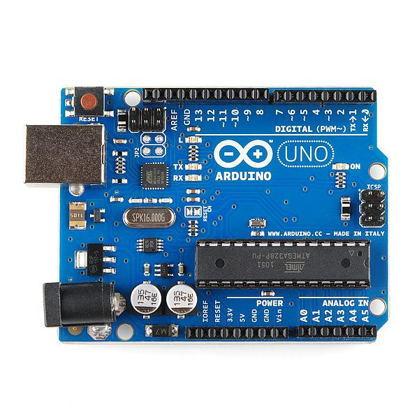
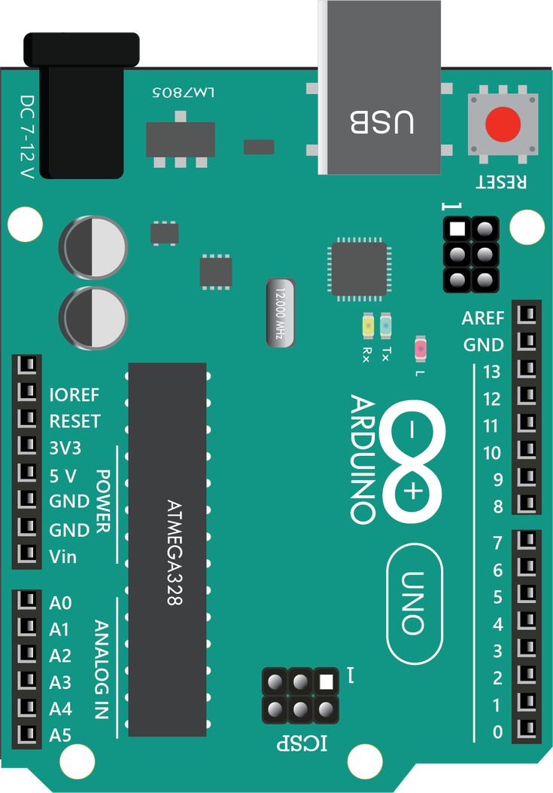
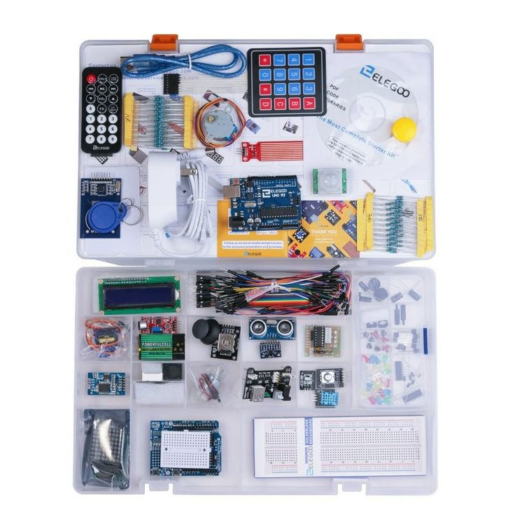
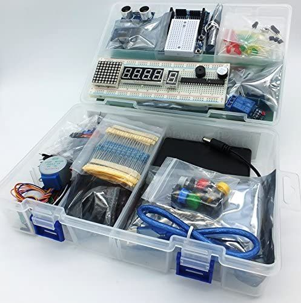
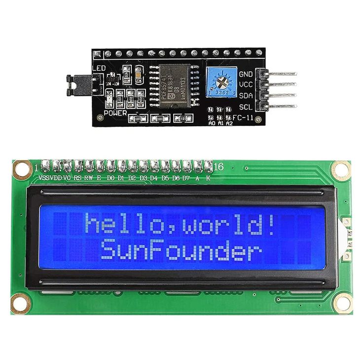
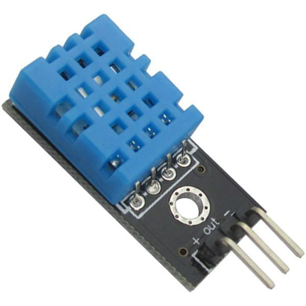
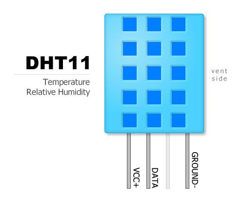

Learn how microcontrollers work, write real C code, and build hands-on hardware projects — LED blink, ultrasonic distance sensor, I2C LCD display and a final weather station.
A microcontroller is a tiny computer on a single chip. It contains a processor, memory, and programmable input/output pins — all in one. Unlike a PC that runs many programs, a microcontroller runs one program at a time, forever in a loop.
Microcontrollers are everywhere — inside your microwave, washing machine, TV remote, car dashboard, traffic lights, medical devices, and much more.
Here are microcontrollers used by engineers, hobbyists and students worldwide:
| Chip | Used In | Notes |
|---|---|---|
| ATmega328P | Arduino Uno | Most beginner-friendly. Perfect for learning. |
| ESP8266 | NodeMCU | Built-in WiFi. Great for IoT projects. |
| ESP32 | Dev boards | WiFi + Bluetooth + dual-core. Very powerful. |
| STM32 | Industry boards | Used in professional and industrial products. |
| PIC16F | Home appliances | Inside microwaves and washing machines. |
| RP2040 | Pi Pico | Dual-core ARM, cheap — programmable in Python or C. |
Arduino is a complete platform — the hardware board, the free IDE software, and a massive global community. The Arduino Uno is where every beginner starts. It uses the ATmega328P microcontroller and gives you clearly labelled pins, USB connection, and built-in power regulation.


There are many Arduino boards for different needs:
| Board | Best For | Key Specs |
|---|---|---|
| Arduino Uno 🏆 | Beginners — start here! | 14 digital, 6 analog, 32KB flash, ATmega328P |
| Arduino Nano | Compact breadboard projects | Same as Uno but tiny — fits on a breadboard |
| Arduino Mega | Big projects, many pins | 54 digital, 16 analog, 256KB flash |
| Arduino Leonardo | USB HID projects | Can act as keyboard or mouse over USB |
| Arduino Due | High-speed 32-bit projects | ARM processor, 3.3V only, much faster |
| Arduino MKR WiFi | IoT / internet projects | Built-in WiFi. Send sensor data to cloud. |
To build real physical projects you'll need an Arduino Starter Kit. These come with the Arduino Uno board, breadboard, LEDs, resistors, sensors, motors, jumper wires and much more — everything you need to follow along with every project in this boot camp.
Don't have a kit yet? No problem — you can simulate every single project in your browser for free using Wokwi. Every lesson has a simulation link.


A breadboard is a reusable plastic board with metal clips inside that let you build circuits by pushing component legs and wires into the holes — no soldering required. It's the most important prototyping tool in electronics.
Arduino code is written in C/C++. Unlike Python, C is a strongly-typed, compiled language — you must declare what type every variable is, and every statement must end with a semicolon ;
Every single Arduino program — no exceptions — must have exactly these two functions:
// ── SETUP ────────────────────────────────────────── // Runs ONE TIME only — when Arduino turns on or resets. // Use this to: set pin modes, start Serial, configure sensors. void setup() { } // ── LOOP ─────────────────────────────────────────── // Runs FOREVER in a continuous loop until power is cut. // All your main program logic goes here. void loop() { }
A variable is a named container that stores a value in memory. In C — unlike Python — you must tell the compiler exactly what type of data it holds before using it. This is because the Arduino has very limited RAM (only 2KB on the Uno!) so the type determines how many bytes to reserve.
// ── INTEGER (int) ─────────────────────────────────── // Stores whole numbers. Range: -32,768 to 32,767 // Uses 2 bytes of RAM. Most common type in Arduino. int ledPin = 13; int count = 0; int distance = -5; // can be negative // ── LONG ──────────────────────────────────────────── // Bigger whole numbers. Range: -2,147,483,648 to 2,147,483,647 // Use for millis(), big sensor values, timestamps. long startTime = 0; long duration = 1500000; // ── FLOAT ─────────────────────────────────────────── // Decimal numbers. Accurate to ~6-7 decimal places. // Slower to process — use only when you need decimals. float temperature = 36.5; float voltage = 3.14; // ── BOOLEAN (bool) ────────────────────────────────── // Only TWO possible values: true or false (1 or 0) // Perfect for on/off, yes/no states. bool ledOn = true; bool buttonHeld = false; // ── BYTE ──────────────────────────────────────────── // Unsigned: 0 to 255. Uses only 1 byte of RAM. // Great for brightness values, PWM, pin numbers. byte brightness = 200; byte speed = 128; // ── CHAR ──────────────────────────────────────────── // A single character. Stored as its ASCII number. char grade = 'A'; // ── STRING ────────────────────────────────────────── // Text. Use sparingly on Arduino — eats RAM fast! String name = "TechCamp";
Before you can use any pin on the Arduino, you must tell it whether that pin will be sending signals (OUTPUT) or receiving signals (INPUT). This is done with pinMode() and it always goes in setup().
Think of each pin as an employee. pinMode() is the job description — you tell them whether they will be speaking (OUTPUT) or listening (INPUT).
void setup() { // pinMode( PIN_NUMBER , MODE ); // ↑ ↑ // which pin OUTPUT → pin sends voltage (5V or 0V) // INPUT → pin reads voltage from outside // INPUT_PULLUP → reads, built-in pull-up resistor pinMode(13, OUTPUT); // Pin 13 → sending (LED) pinMode(12, OUTPUT); // Pin 12 → sending (another LED) pinMode(7, INPUT); // Pin 7 → receiving (button) pinMode(6, INPUT_PULLUP); // Pin 6 → receiving w/ internal resistor pinMode(A0, INPUT); // Analog A0 → receiving (potentiometer/sensor) }
digitalWrite() controls digital OUTPUT pins. It sends either HIGH (5 volts) or LOW (0 volts) to a pin. That voltage change is what turns LEDs on/off, activates relays, sends signals to other devices.
Think of it as a light switch — HIGH = switch on, LOW = switch off.
// digitalWrite( PIN , VALUE ); // ↑ ↑ // pin HIGH = send 5V (current flows → LED lights) // LOW = send 0V (no current → LED goes dark) void setup() { pinMode(13, OUTPUT); // MUST set as OUTPUT first } void loop() { digitalWrite(13, HIGH); // ← sends 5V → pin 13 goes HIGH → LED ON delay(1000); // ← pause 1000ms (1 second) digitalWrite(13, LOW); // ← sends 0V → pin 13 goes LOW → LED OFF delay(1000); // ← pause 1 second before repeating // This loop runs forever → LED blinks endlessly } // You can also use HIGH=1 and LOW=0 as numbers: // digitalWrite(13, 1); // same as HIGH // digitalWrite(13, 0); // same as LOW // Controlling multiple pins: // digitalWrite(13, HIGH); // LED 1 ON // digitalWrite(12, LOW); // LED 2 OFF // Both happen almost simultaneously (microseconds apart)
digitalRead() reads the voltage on a digital INPUT pin. It returns either HIGH (pin sees ~5V) or LOW (pin sees 0V). Use this to detect button presses, switch states, or digital sensor signals.
// ── Button Wiring ────────────────────────────────── // One button leg → Pin 7 // Other button leg → GND // 10kΩ resistor between Pin 7 and 5V (pull-down) int buttonPin = 7; // button connected to pin 7 int ledPin = 13; // LED on pin 13 int state = 0; // variable to store the reading void setup() { pinMode(buttonPin, INPUT); // button → reading incoming signal pinMode(ledPin, OUTPUT); // LED → sending signal out Serial.begin(9600); // open Serial Monitor } void loop() { state = digitalRead(buttonPin); // ↑ reads the voltage on pin 7 // returns HIGH (1) if button pressed // returns LOW (0) if button not pressed if (state == HIGH) { digitalWrite(ledPin, HIGH); // button pressed → LED ON Serial.println("Button PRESSED"); // print to monitor } else { digitalWrite(ledPin, LOW); // not pressed → LED OFF Serial.println("Button released"); } delay(50); // small delay to avoid reading too fast (debounce) } // ── With INPUT_PULLUP (no external resistor needed) ─── // pinMode(7, INPUT_PULLUP); // → pin reads HIGH normally, LOW when button pressed // → Logic is INVERTED: LOW = pressed, HIGH = released!
Digital pins are all-or-nothing — HIGH or LOW. But the real world has in-between values — a temperature isn't just "hot" or "cold", it's 27.5°C. analogRead() reads a voltage anywhere between 0V and 5V and converts it to a number from 0 to 1023 using the Arduino's built-in 10-bit ADC (Analog-to-Digital Converter).
// analogRead( PIN ); // Only works on analog pins: A0, A1, A2, A3, A4, A5 // Returns a number: 0 (0V) to 1023 (5V) // 10-bit resolution → 2^10 = 1024 possible values int sensorPin = A0; // potentiometer/sensor on A0 int sensorValue = 0; // store the reading here void setup() { Serial.begin(9600); // NOTE: analog pins don't need pinMode() for INPUT // They are INPUT by default — just read them directly } void loop() { sensorValue = analogRead(A0); // ↑ reads voltage on A0 // 0V → returns 0 // 2.5V → returns 511 // 5V → returns 1023 Serial.print("Raw value: "); Serial.println(sensorValue); // e.g. 0 to 1023 // ── Converting to Voltage ───────────────────────── // voltage = (sensorValue / 1023.0) × 5.0 float voltage = (sensorValue / 1023.0) * 5.0; Serial.print("Voltage: "); Serial.print(voltage); Serial.println(" V"); // ── Converting to Percentage (0-100%) ──────────── int percent = map(sensorValue, 0, 1023, 0, 100); Serial.print("Level: "); Serial.print(percent); Serial.println("%"); delay(500); }
map(value, fromLow, fromHigh, toLow, toHigh). Use it to turn 0–1023 into 0–255 for PWM, or 0–100 for percentages.analogWrite() doesn't actually output a true analog voltage. Instead it uses PWM (Pulse Width Modulation) — it rapidly switches the pin between HIGH and LOW, so fast the LED appears to dim or the motor appears to slow down. The duty cycle (how long it stays HIGH vs LOW per cycle) controls the apparent power.
// analogWrite( PIN , VALUE ); // ↑ ↑ // pin 0 = fully OFF (0% duty cycle) // 128 = half power (50% duty cycle) // 255 = fully ON (100% duty cycle) // // ⚠ ONLY works on PWM pins: 3, 5, 6, 9, 10, 11 // (marked with ~ tilde on Arduino Uno board) int ledPin = 9; // must be a PWM pin (~) void setup() { pinMode(ledPin, OUTPUT); } void loop() { // ── Fade LED in (0% → 100%) ────────────────────── for (int brightness = 0; brightness <= 255; brightness++) { analogWrite(ledPin, brightness); // ↑ each iteration increases brightness by 1 delay(8); // small delay so fade is visible } // ── Fade LED out (100% → 0%) ───────────────────── for (int brightness = 255; brightness >= 0; brightness--) { analogWrite(ledPin, brightness); delay(8); } // ── Control motor speed from sensor ────────────── int sensorVal = analogRead(A0); // 0 to 1023 int speed = map(sensorVal, 0, 1023, 0, 255); // ↑ converts sensor range to PWM range analogWrite(10, speed); // motor speed follows sensor }
delay() pauses the program for a number of milliseconds. It is the simplest timing tool — but it freezes the entire Arduino during the wait. While delay() is running, Arduino can't read sensors, check buttons, or do anything else.
millis() returns how many milliseconds have passed since Arduino turned on — without stopping anything. Think of it as checking a stopwatch while still running.
// ── delay() — simple but BLOCKS everything ────────── // delay( MILLISECONDS ); // 1000ms = 1 second, 500ms = 0.5 sec, 100ms = 0.1 sec void loop() { digitalWrite(13, HIGH); delay(1000); // ← Arduino FROZEN for 1 second // cannot read buttons, sensors etc. digitalWrite(13, LOW); delay(1000); // ← frozen again } // ── millis() — non-blocking timing ────────────────── // Returns unsigned long (time since Arduino started, in ms) // Use when you need to do multiple things at the same time unsigned long previousTime = 0; int interval = 1000; // blink every 1000ms bool ledState = false; void loop() { unsigned long currentTime = millis(); // ↑ get current time — doesn't pause anything if (currentTime - previousTime >= interval) { // ↑ has 1000ms passed since last blink? previousTime = currentTime; // save current time ledState = !ledState; // toggle LED on/off digitalWrite(13, ledState); } // ↓ This still runs while LED is "waiting" to blink // Read sensor, check button — no freezing! int sensor = analogRead(A0); }
The Serial port lets Arduino communicate with your computer over the USB cable — the same cable you use to upload code. This is your most powerful debugging tool. You can print sensor values, debug messages, variable values — anything — to the Serial Monitor in Arduino IDE.
void setup() { Serial.begin(9600); // ↑ MUST call this first in setup() before any Serial use // 9600 = baud rate (bits per second) // Must match baud rate in Serial Monitor dropdown // Common: 9600, 115200. 9600 is fine for beginners. } void loop() { int temp = 27; float voltage = 3.14; // ── Serial.print() — prints WITHOUT newline ────── Serial.print("Temperature: "); // cursor stays on same line Serial.print(temp); // prints the number Serial.print(" degrees"); // ── Serial.println() — prints WITH newline ──────── Serial.println(); // just moves to next line Serial.println(temp); // prints number + newline Serial.println("Hello World"); // prints text + newline Serial.println(voltage, 2); // float with 2 decimal places // ── Best practice — use labels ─────────────────── Serial.print("Temp: "); Serial.print(temp); Serial.print(" | Voltage: "); Serial.println(voltage); // Output: Temp: 27 | Voltage: 3.14 // ── Serial.available() — check for incoming data ── // Reads what YOU type in the Serial Monitor if (Serial.available() > 0) { char received = Serial.read(); // read one character Serial.print("You sent: "); Serial.println(received); } delay(1000); }
Loops repeat code automatically. Functions let you organise and reuse code — like creating your own Arduino commands.
// ── FOR LOOP — repeat exact number of times ────────── // for ( start ; condition ; increment ) { } // ↑ ↑ ↑ // int i=0 runs while i++ means i = i + 1 for (int i = 0; i < 5; i++) { digitalWrite(13, HIGH); delay(200); digitalWrite(13, LOW); delay(200); // blinks 5 times then stops } // ── WHILE LOOP — repeat while condition is true ─────── int count = 0; while (count < 10) { Serial.println(count); count++; // count = count + 1 (MUST update or infinite loop!) } // ── WRITING YOUR OWN FUNCTIONS ──────────────────────── // return_type functionName( parameters ) { body } // void = returns nothing void blinkLED(int pin, int times, int speed) { // ↑ custom function: which pin, how many blinks, delay for (int i = 0; i < times; i++) { digitalWrite(pin, HIGH); delay(speed); digitalWrite(pin, LOW); delay(speed); } } int addNumbers(int a, int b) { // ↑ returns an int result return a + b; // sends the value back to the caller } void setup() { pinMode(13, OUTPUT); } void loop() { blinkLED(13, 3, 500); // blink pin 13, 3 times, 500ms each blinkLED(13, 1, 100); // blink pin 13, 1 time, fast int result = addNumbers(10, 25); Serial.println(result); // prints 35 delay(2000); }
Here's every key function you'll use — with exactly what each argument means:
The LED Blink is the "Hello World" of Arduino. We make an LED turn on and off repeatedly. The Arduino Uno has a built-in LED on Pin 13 — so you don't even need extra parts to run your first program!
| From | To | Wire Colour |
|---|---|---|
| Arduino Pin 13 | Resistor Leg 1 | Any |
| Resistor Leg 2 | LED Anode (+) | Any |
| LED Cathode (–) | Arduino GND | Black |
// LED Blink — TechCamp Week 2 Project 1 int ledPin = 13; // LED on pin 13 void setup() { pinMode(ledPin, OUTPUT); // set pin 13 as output } void loop() { digitalWrite(ledPin, HIGH); // LED ON (5V) delay(1000); // wait 1 second digitalWrite(ledPin, LOW); // LED OFF (0V) delay(1000); // wait 1 second }
The HC-SR04 is an ultrasonic distance sensor. It works like a bat — it sends out a high-frequency sound pulse (TRIG pin), which bounces off objects and returns (ECHO pin). By measuring the time it takes, we calculate the distance in centimetres.
This is the same principle used in car parking sensors, drones, robots and industrial automation.
| HC-SR04 Pin | Arduino Pin | Purpose |
|---|---|---|
| VCC | 5V | Power |
| TRIG | Pin 9 | Trigger pulse (output from Arduino) |
| ECHO | Pin 10 | Echo return (input to Arduino) |
| GND | GND | Ground |
// Ultrasonic Distance Sensor — TechCamp Week 2 Project 2 int trigPin = 9; int echoPin = 10; void setup() { Serial.begin(9600); pinMode(trigPin, OUTPUT); pinMode(echoPin, INPUT); Serial.println("Distance Sensor Ready!"); } void loop() { // Step 1: Send trigger pulse digitalWrite(trigPin, LOW); delayMicroseconds(2); digitalWrite(trigPin, HIGH); delayMicroseconds(10); // 10 microsecond pulse digitalWrite(trigPin, LOW); // Step 2: Measure echo duration long duration = pulseIn(echoPin, HIGH); // Step 3: Calculate distance // Speed of sound = 0.034 cm/µs // Divide by 2 because pulse travels there AND back int distance = duration * 0.034 / 2; // Step 4: Print to Serial Monitor Serial.print("Distance: "); Serial.print(distance); Serial.println(" cm"); // Step 5: Danger alert with LED on pin 13 if (distance < 10) { digitalWrite(13, HIGH); // LED on — too close! Serial.println("⚠ WARNING: Object too close!"); } else { digitalWrite(13, LOW); // LED off — safe distance } delay(500); // read every 0.5 seconds }
An I2C LCD (16x2) can display 2 rows of 16 characters. Normally an LCD needs 6+ wires — but the I2C backpack module reduces this to just 4 wires using a communication protocol called I2C (Inter-Integrated Circuit).
I2C uses only 2 signal wires — SDA (data) and SCL (clock) — to talk to many devices on the same bus. This is very common in professional electronics.

| LCD Pin | Arduino Pin | Purpose |
|---|---|---|
| GND | GND | Ground |
| VCC | 5V | Power |
| SDA | A4 | I2C Data line |
| SCL | A5 | I2C Clock line |
Install LiquidCrystal I2C by Frank de Brabander via Library Manager first, then upload:
#include <Wire.h> #include <LiquidCrystal_I2C.h> // Create LCD: address 0x27, 16 columns, 2 rows LiquidCrystal_I2C lcd(0x27, 16, 2); void setup() { lcd.init(); // initialize the LCD lcd.backlight(); // turn on backlight lcd.setCursor(0, 0); // column 0, row 0 (top) lcd.print("Hello, World!"); lcd.setCursor(0, 1); // column 0, row 1 (bottom) lcd.print("TechCamp 2026"); } void loop() { // message stays — nothing to loop }
The DHT11 is a digital sensor that measures temperature (0–50°C) and humidity (20–90% RH) in one small package. Used in weather stations, smart thermostats, greenhouses and HVAC systems.


#include <DHT.h> #define DHTPIN 2 #define DHTTYPE DHT11 DHT dht(DHTPIN, DHTTYPE); void setup() { Serial.begin(9600); dht.begin(); } void loop() { delay(2000); float h = dht.readHumidity(); float t = dht.readTemperature(); if (isnan(h) || isnan(t)) { Serial.println("Sensor error!"); return; } Serial.print("Temp: "); Serial.print(t); Serial.print("°C "); Serial.print("Humidity: "); Serial.print(h); Serial.println("%"); }
We combine everything into one real project: read live temperature and humidity from the DHT11 sensor and display it on the I2C LCD screen, updating every 2 seconds. This is exactly how a commercial weather station works!
| Component | Pin | Arduino |
|---|---|---|
| DHT11 | + (VCC) | 5V |
| DHT11 | out (DATA) | Pin 2 |
| DHT11 | - (GND) | GND |
| I2C LCD | VCC | 5V |
| I2C LCD | GND | GND |
| I2C LCD | SDA | A4 |
| I2C LCD | SCL | A5 |
// ═══════════════════════════════════════════ // FINAL PROJECT: DHT11 Readings on I2C LCD // TechCamp Boot Camp — Week 2 // Instructor: Gyamerah Afriyie Philimon // ═══════════════════════════════════════════ #include <Wire.h> #include <LiquidCrystal_I2C.h> #include <DHT.h> #define DHTPIN 2 #define DHTTYPE DHT11 DHT dht(DHTPIN, DHTTYPE); LiquidCrystal_I2C lcd(0x27, 16, 2); void setup() { Serial.begin(9600); lcd.init(); lcd.backlight(); dht.begin(); // Startup message lcd.setCursor(0, 0); lcd.print("TechCamp 2026"); lcd.setCursor(0, 1); lcd.print("Reading sensor.."); delay(2000); lcd.clear(); } void loop() { delay(2000); float h = dht.readHumidity(); float t = dht.readTemperature(); if (isnan(h) || isnan(t)) { lcd.clear(); lcd.setCursor(0, 0); lcd.print("Sensor Error!"); return; } lcd.clear(); // Row 0 — Temperature lcd.setCursor(0, 0); lcd.print("Temp: "); lcd.print(t, 1); // 1 decimal place lcd.print(" C"); // Row 1 — Humidity lcd.setCursor(0, 1); lcd.print("Humidity: "); lcd.print(h, 0); // whole number lcd.print(" %"); Serial.print("Temp: "); Serial.print(t); Serial.print("C | Humidity: "); Serial.print(h); Serial.println("%"); }
This week is just the beginning. Explore these resources for more projects:
Before building any circuit, you need to understand the three fundamental properties of electricity. They work together in every circuit you will ever build.
Ohm's Law describes the relationship between Voltage, Current and Resistance. Know this formula and you can calculate anything in a basic circuit.
// ── Practical Example: What resistor for an LED? ───────
//
// LED forward voltage (Vf) = 2.0V (red LED typical)
// Arduino pin voltage (Vs) = 5.0V
// LED desired current (I) = 20mA = 0.020A
//
// Voltage across resistor = Vs - Vf = 5.0 - 2.0 = 3.0V
// R = V ÷ I = 3.0 ÷ 0.020 = 150Ω
//
// → Use a 150Ω or the nearest standard value: 220Ω (safer)
// → Lower resistance = more current = brighter but may burn LED
// → Higher resistance = less current = dimmer but saferResistors have colour bands painted on them that tell you their resistance value. Learning to read them means you can identify any resistor without measuring it. The most common are 4-band resistors.
An LED (Light Emitting Diode) is a semiconductor component that emits light when current flows through it in the correct direction. Unlike a light bulb, LEDs are polarised — they only work one way round.
A push button is a simple switch — it connects two points in a circuit when pressed and disconnects them when released. Buttons in starter kits are typically momentary tactile switches with 4 legs.
A capacitor stores electrical charge and releases it quickly. Think of it like a small rechargeable battery that charges and discharges very fast. Capacitors are used to smooth out voltage spikes, filter noise in power lines, and create time delays in circuits.
The breadboard is your prototyping workspace. Understanding how connections work inside it is essential — the most common beginner mistakes come from misunderstanding the breadboard's internal connections.
Here's every common component in a starter kit and exactly what it does:
Write and run real C/C++ code in your browser. Powered by the Wandbox API — a free online compiler that runs your code on a real GCC compiler server. This lets you practice all the C programming concepts from before uploading to Arduino.
📡 Requires an internet connection. Runs on real GCC — output appears in 1–3 seconds. Arduino functions like pinMode() and digitalWrite() won't work here — use standard C++ only (printf, cout, for/while loops, functions etc.)
Load the starter code for each challenge, edit it in the console above, and run it!